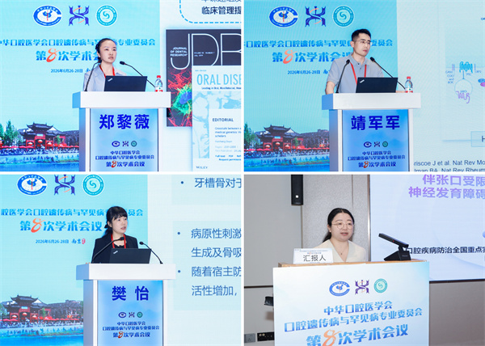

学院通知 · 科研创新
我院师生参加中华口腔医学会口腔遗传病与罕见病专业委员会第八次学术年会展风采
发布时间：2026/07/03
2026年6月26日至28日，由中华口腔医学会口腔遗传病与罕见病专业委员会主办、南京医科大学附属口腔医院（江苏省口腔医院）承办的“中华口腔医学会口腔遗传病与罕见病专业委员会第八次学术年会”在江苏省南京市召开。我院师生积极参与大会各项交流，全面展示了华西口腔在该领域的临床实力与科研成果。 我院郑黎薇教授以“生命早期代谢微环境与牙发育异常的关联与机制研究”为题作大会报告，报告结束后携其主编的儿童口腔科普绘本《保卫萌牙山》（全套4册）参与大会集中签赠活动。我院靖军军研究员以“Gli2与Gli3协同调控颅颌面发育的机制研究”为题作报告，樊怡教授围绕“口腔干细胞在组织稳态与炎性微环境中的作用”进行专题汇报，充分彰显了我院学科新生力量的创新活力。在病例交流环节，我院儿童口腔科周媛副主任医师以“伴多关节挛缩、反合、融合牙、先天缺牙的神经发育障碍—面部畸形—远端骨骼异常一例”为题作病例交流，展现了我院在罕见病综合征多学科诊疗方面的临床水平。在大会分论坛中，儿童口腔科研究生田青鹭、杨舒婷和唇腭裂外科研究生罗凌峰作学术报告，获得与会专家高度评价。 我院师生在本次学术年会中多点开花，在大会报告、中青年讲坛、病例交流、教学展示、科研壁报及科普展示等各环节均展现出卓越的创新活力与学术风采，充分体现了华西口腔在口腔遗传病与罕见病领域的持续深耕与良好传承。未来，我院将继续加强该领域的科学研究与临床实践，深化学术交流，为口腔遗传病与罕见病的防治及健康中国建设贡献更多华西力量。
